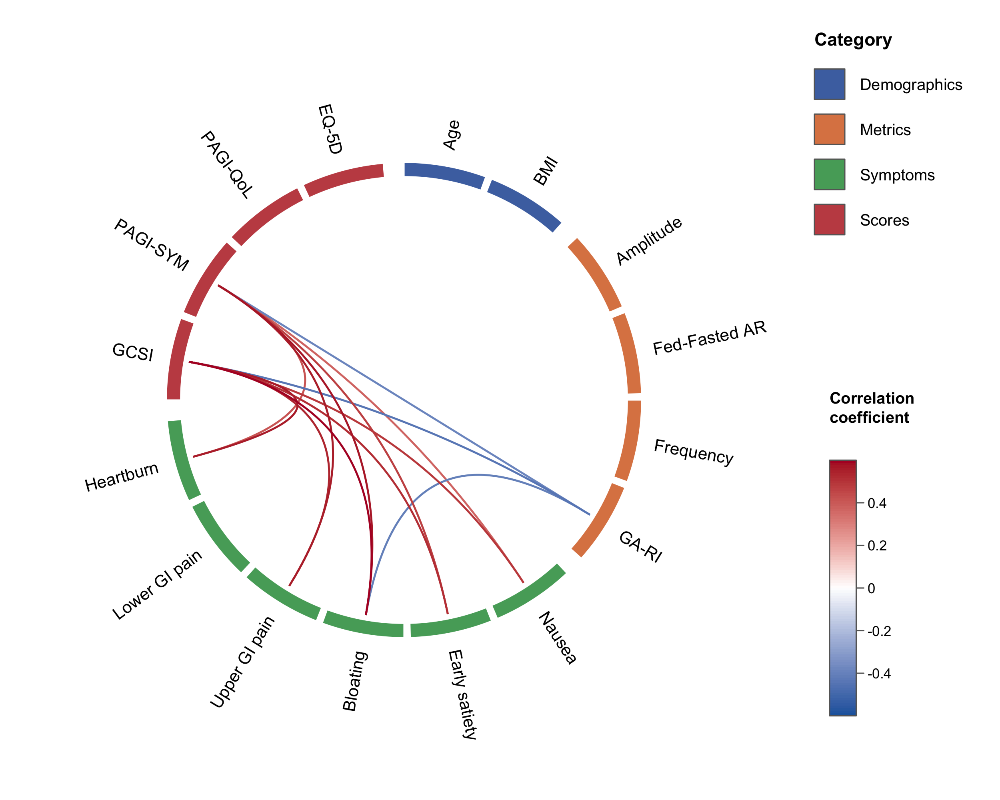

Circular correlation “wheel” plots in native R.
circlecorR draws correlation wheel plots — variables arranged around a ring, grouped and colour-tiled by category, connected by curved links whose colour maps to the correlation coefficient — using circlize. It replaces the older R → Python (mne.viz.plot_connectivity_circle) round-trip with a single R call.
A traditional correlation matrix is mostly redundant: a diagonal of self-correlations, two mirror-image triangles, and blocks of within-category correlations that bury the between-category relationships you care about. The wheel — introduced by Gharibans et al. (2019) — keeps only those relationships. Hiding self- and within-category correlations also removes them from the multiple-comparison family, which improves statistical power (see vignette("circlecorR")).

Installation
# install.packages("remotes")
remotes::install_github("kriz98/circlecorR", build_vignettes = TRUE)(CRAN release pending.)
It needs circlize; psych is only required if you let the package compute correlations for you (the raw-data path below).
install.packages(c("circlize", "psych"))Quick start — straight from your data
Most datasets are one row per subject, one column per variable. You don’t need to build correlation matrices yourself: hand that data frame to corr_wheel() and it computes the correlations and p-values for you. The only other thing you supply is groups, which both selects the variables and orders them around the wheel (extra columns like IDs are ignored).
library(circlecorR)
# `gastro_symptoms` is a synthetic example dataset bundled with the package --
# swap it for your own data frame (one row per subject) to use your own data.
groups <- list(
Demographics = c("Age", "BMI"),
Metrics = c("Amplitude", "Fed-Fasted AR", "Frequency", "GA-RI"),
Symptoms = c("Nausea", "Early satiety", "Bloating",
"Upper GI pain", "Lower GI pain", "Heartburn"),
Scores = c("GCSI", "PAGI-SYM", "PAGI-QoL", "EQ-5D")
)
corr_wheel(
gastro_symptoms, # one row per subject -- use your own data here
groups = groups,
method = "pearson",
adjust = "hochberg",
sig_level = 0.05,
r_threshold = 0.3,
r_limits = c(-0.6, 0.6)
)From pre-computed r / p matrices (e.g. existing CSVs)
corr_wheel() auto-detects a correlation matrix, so the old two-file workflow still works:
r <- as.matrix(read.csv("Rvalues.csv", row.names = 1))
p <- as.matrix(read.csv("Pvalues.csv", row.names = 1))
corr_wheel(r, p, groups = groups, r_threshold = 0.3)Save to file
png("correlation_wheel.png", width = 2400, height = 2000, res = 300)
corr_wheel(gastro_symptoms, groups = groups, r_threshold = 0.3, r_limits = c(-0.6, 0.6))
dev.off()See vignette("circlecorR") for the full tour.
Flexibility
Everything the reference figure controls is a plain argument:
| What | Argument | Example |
|---|---|---|
| Category assignment & order | groups |
named list or variable = category vector |
| Colour scheme (category colours + link palette, together) | scheme |
"colorblind", "ocean", "vivid", "alimetry", or list(colors=, palette=)
|
| Category colours | colors |
c(Symptoms = "#55A868", Scores = "#C44E52") (overrides scheme per category) |
| Pretty variable labels | labels |
c("GA-RI" = "Rhythm index") |
| Significance cutoff | sig_level |
0.05 |
| Multiple-comparison adjustment | adjust |
"holm", "hochberg", "BH", "none"
|
| Minimum |r| shown | r_threshold |
0.3 |
| Hide within-category links | hide_within_group |
TRUE / FALSE
|
| Colour-scale range | r_limits |
c(-0.5, 0.5) |
| Link colour ramp | palette |
c("#2166AC", "white", "#B2182B") (overrides scheme’s) |
| Block size (thickness) | tile_height |
0.06 (thin) … 0.12 (thick) |
| Line size (width) | link_lwd |
1.6, 3
|
| Rotation / spacing |
start_degree, group_gap, node_gap
|
|
| Legend / colour bar |
legend, colorbar
|
Built-in schemes are listed with corr_wheel_schemes() and inspected/tweaked with corr_wheel_scheme(); see vignette("circlecorR") for examples.
corr_wheel() returns (invisibly) the ordered variables, resolved group and colour maps, the colour function, and the masked matrix actually plotted — handy for reproducibility or building a caption.
Example data
gastro_symptoms (raw) and gastro_cor (an r/p circlecor object) are bundled synthetic datasets — fully simulated, not patient data — mimicking a gastric -symptom study. See ?gastro_cor.
How masking & statistics work
A link between variables i and j is drawn only if all hold:
- they are in different categories (when
hide_within_group = TRUE), and never the same variable (self-correlations are always excluded); -
p_adjusted <= sig_level; and -
|r| >= r_threshold.
The correlations left after step 1 form the family of comparisons. When the p-values are raw (computed from your data, or from a circlecor object), the adjust correction is applied over only that family — so redundant self- and within-category correlations don’t inflate the count, and power improves. A pre-computed p matrix is used as given. corr_wheel() returns n_tests (the family size) and the family-adjusted p-matrix for reporting.